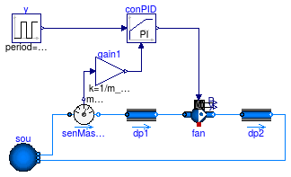
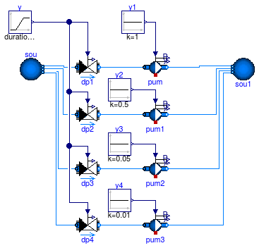

Collection of models that illustrate model use and test models
Information
This package contains examples for the use of models that can be found in
Buildings.Fluid.Movers.
Extends from Modelica.Icons.ExamplesPackage (Icon for packages containing runnable examples).
Package Content
Flow machine with feedback control

Information
This example demonstrates the use of a fan with closed loop control.
The fan is controlled to track a required mass flow rate.
Extends from Modelica.Icons.Example (Icon for runnable examples).
Parameters
| Type | Name | Default | Description |
|---|
| MassFlowRate | m_flow_nominal | 0.1 | Nominal mass flow rate [kg/s] |
| Pressure | dp_nominal | 500 | Nominal pressure difference [Pa] |
Modelica definition
model ClosedLoop_y
"Flow machine with feedback control"
extends Modelica.Icons.Example;
package Medium =
Buildings.Media.Air;
parameter Modelica.SIunits.MassFlowRate m_flow_nominal= 0.1
"Nominal mass flow rate";
parameter Modelica.SIunits.Pressure dp_nominal = 500
"Nominal pressure difference";
Modelica.Blocks.Sources.Pulse y(
offset=0.25,
startTime=0,
amplitude=0.5,
period=15*60)
"Input signal";
Buildings.Fluid.Sources.Boundary_pT sou(
redeclare package Medium = Medium,
use_p_in=false,
p=101325,
T=293.15,
nPorts=2);
FixedResistances.FixedResistanceDpM dp1(
redeclare package Medium = Medium,
m_flow_nominal=m_flow_nominal,
dp_nominal=dp_nominal/2)
"Pressure drop";
Buildings.Fluid.FixedResistances.FixedResistanceDpM dp2(
redeclare package Medium = Medium,
m_flow_nominal=m_flow_nominal,
dp_nominal=dp_nominal/2)
"Pressure drop";
Buildings.Fluid.Movers.SpeedControlled_y fan(
redeclare package Medium = Medium,
per(pressure(V_flow={0,m_flow_nominal,2*m_flow_nominal}/1.2,
dp={2*dp_nominal,dp_nominal,0})),
energyDynamics=Modelica.Fluid.Types.Dynamics.FixedInitial)
"Fan";
Buildings.Fluid.Sensors.MassFlowRate senMasFlo(
redeclare package Medium =
Medium);
Buildings.Controls.Continuous.LimPID conPID(
Td=1,
controllerType=Modelica.Blocks.Types.SimpleController.PI,
k=0.5,
Ti=15);
Modelica.Blocks.Math.Gain gain1(k=1/m_flow_nominal);
equation
connect(sou.ports[1], senMasFlo.port_a);
connect(senMasFlo.port_b, dp1.port_a);
connect(dp1.port_b, fan.port_a);
connect(fan.port_b, dp2.port_a);
connect(dp2.port_b, sou.ports[2]);
connect(senMasFlo.m_flow, gain1.u);
connect(gain1.y, conPID.u_m);
connect(y.y, conPID.u_s);
connect(conPID.y, fan.y);
end ClosedLoop_y;
Two flow machines in parallel

Information
This example tests the configuration of two flow machines that are installed in parallel.
Both flow machines start with full speed.
At t=150 second, the speed of the flow machine on the top is reduced to zero.
As its speed is reduced, the mass flow rate changes its direction in such a way that the flow machine
at the top has reverse flow.
Extends from Modelica.Icons.Example (Icon for runnable examples).
Parameters
| Type | Name | Default | Description |
|---|
| MassFlowRate | m_flow_nominal | 1 | Nominal mass flow rate [kg/s] |
| Density | rho_nominal | 1000 | Density, used to compute fluid mass [kg/m3] |
Modelica definition
model PumpsParallel
"Two flow machines in parallel"
extends Modelica.Icons.Example;
package Medium =
Buildings.Media.Water "Medium model";
parameter Modelica.SIunits.MassFlowRate m_flow_nominal= 1
"Nominal mass flow rate";
parameter Modelica.SIunits.Density rho_nominal=1000
"Density, used to compute fluid mass";
Buildings.Fluid.FixedResistances.FixedResistanceDpM dpIn1(
redeclare package Medium = Medium,
dp_nominal=1000,
m_flow_nominal=0.5*m_flow_nominal)
"Pressure drop";
Buildings.Fluid.Movers.SpeedControlled_y floMac1(
redeclare package Medium = Medium,
per(pressure(V_flow={0, m_flow_nominal/rho_nominal}, dp={2*4*1000, 0})),
energyDynamics=Modelica.Fluid.Types.Dynamics.FixedInitial)
"Model of a flow machine";
Buildings.Fluid.FixedResistances.FixedResistanceDpM dpOut1(
redeclare package Medium = Medium,
dp_nominal=1000,
m_flow_nominal=0.5*m_flow_nominal)
"Pressure drop";
Buildings.Fluid.Sources.Boundary_pT sou(
redeclare package Medium = Medium,
use_p_in=false,
nPorts=2,
T=293.15);
Buildings.Fluid.FixedResistances.FixedResistanceDpM dpIn(
redeclare package Medium = Medium,
m_flow_nominal=m_flow_nominal,
dp_nominal=1000)
"Pressure drop";
Buildings.Fluid.FixedResistances.FixedResistanceDpM dpOut3(
redeclare package Medium = Medium,
m_flow_nominal=m_flow_nominal,
dp_nominal=1000)
"Pressure drop";
Modelica.Blocks.Sources.Constant const2(k=1)
"Constant source";
Buildings.Fluid.FixedResistances.FixedResistanceDpM dpIn2(
redeclare package Medium = Medium,
dp_nominal=1000,
m_flow_nominal=0.5*m_flow_nominal)
"Pressure drop";
Buildings.Fluid.Movers.SpeedControlled_y floMac2(
redeclare package Medium = Medium,
per(pressure(V_flow={0, m_flow_nominal/rho_nominal}, dp={2*4*1000, 0})),
energyDynamics=Modelica.Fluid.Types.Dynamics.FixedInitial)
"Model of a flow machine";
Buildings.Fluid.FixedResistances.FixedResistanceDpM dpOut2(
redeclare package Medium = Medium,
dp_nominal=1000,
m_flow_nominal=0.5*m_flow_nominal)
"Pressure drop";
Modelica.Blocks.Sources.Step const1(
height=-1,
offset=1,
startTime=150);
equation
connect(dpIn1.port_b, floMac1.port_a);
connect(floMac1.port_b, dpOut1.port_a);
connect(sou.ports[1], dpIn.port_a);
connect(dpIn.port_b, dpIn1.port_a);
connect(dpOut1.port_b, dpOut3.port_a);
connect(dpOut3.port_b, sou.ports[2]);
connect(dpIn2.port_b,floMac2. port_a);
connect(floMac2.port_b,dpOut2. port_a);
connect(const2.y, floMac2.y);
connect(dpIn.port_b, dpIn2.port_a);
connect(dpOut2.port_b, dpOut3.port_a);
connect(const1.y, floMac1.y);
end PumpsParallel;
Two flow machines in series

Information
This example tests the configuration of two flow machines that are installed in series.
Both flow machines start with full speed.
At t=150 seconds, the speed of the flow machine on the left is reduced to zero.
As its speed is reduced, the mass flow rate is reduced. Note that even at zero input, the mass flow rate is non-zero,
but the pressure drop of the pump floMac1.dp is positive, which means that this pump has a flow resistance.
However, flowMac2.dp is always negative, as this pump has a constant control input of 1.
Extends from Modelica.Icons.Example (Icon for runnable examples).
Parameters
| Type | Name | Default | Description |
|---|
| MassFlowRate | m_flow_nominal | 1 | Nominal mass flow rate [kg/s] |
| ThermodynamicState | state_start | Medium.setState_pTX(T=Medium... | Start state |
| Density | rho_nominal | Medium.density(state_start) | Density, used to compute fluid mass [kg/m3] |
Modelica definition
model PumpsSeries
"Two flow machines in series"
extends Modelica.Icons.Example;
package Medium =
Buildings.Media.Water;
parameter Modelica.SIunits.MassFlowRate m_flow_nominal=
1
"Nominal mass flow rate";
Buildings.Fluid.Movers.SpeedControlled_y floMac1(
redeclare package Medium = Medium,
per(pressure(V_flow={0, m_flow_nominal/1000}, dp={2*4*1000, 0})),
dynamicBalance=false)
"Model of a flow machine";
Buildings.Fluid.Sources.Boundary_pT sou(
redeclare package Medium = Medium,
use_p_in=false,
p(displayUnit="Pa") = 300000,
T=293.15,
nPorts=1);
Modelica.Blocks.Sources.Constant const2(k=1);
parameter Medium.ThermodynamicState state_start =
Medium.setState_pTX(
T=Medium.T_default,
p=Medium.p_default,
X=Medium.X_default)
"Start state";
parameter Modelica.SIunits.Density rho_nominal=
Medium.density(
state_start)
"Density, used to compute fluid mass";
Buildings.Fluid.Movers.SpeedControlled_y floMac2(
redeclare package Medium = Medium,
per(pressure(V_flow={0, m_flow_nominal/1000}, dp={2*4*1000, 0})),
dynamicBalance=false)
"Model of a flow machine";
Modelica.Blocks.Sources.Step const1(
height=-1,
offset=1,
startTime=150);
Buildings.Fluid.Sources.Boundary_pT sou1(
redeclare package Medium = Medium,
use_p_in=false,
p(displayUnit="Pa") = 300000 + 4000,
T=293.15,
nPorts=1);
equation
connect(const2.y, floMac2.y);
connect(const1.y, floMac1.y);
connect(floMac1.port_b, floMac2.port_a);
connect(sou.ports[1], floMac1.port_a);
connect(floMac2.port_b, sou1.ports[1]);
end PumpsSeries;
Pumps that illustrates the use of the pump curves

Information
This example demonstrates how the pump curves changes for different (constant) input
signal y.
If y ≥ delta = 0.05, the pump curves are polynomials.
For y < delta = 0.05, the pump curves convert to linear functions to
avoid a singularity at the origin.
Extends from Modelica.Icons.Example (Icon for runnable examples).
Parameters
| Type | Name | Default | Description |
|---|
| MassFlowRate | m_flow_nominal | 0.5 | Nominal mass flow rate [kg/s] |
| Pressure | dp_nominal | 10000 | Nominal pressure [Pa] |
Modelica definition
model SpeedControlled_y_pumpCurves
"Pumps that illustrates the use of the pump curves"
extends Modelica.Icons.Example;
package Medium =
Buildings.Media.Water "Medium model";
parameter Modelica.SIunits.MassFlowRate m_flow_nominal = 0.5
"Nominal mass flow rate";
parameter Modelica.SIunits.Pressure dp_nominal = 10000
"Nominal pressure";
model pumpModel =
Buildings.Fluid.Movers.SpeedControlled_y (
redeclare package Medium = Medium,
energyDynamics=Modelica.Fluid.Types.Dynamics.SteadyState,
dynamicBalance=false,
per(pressure(V_flow=2/1000*m_flow_nominal*{0.2, 0.4, 0.6, 0.8},
dp=dp_nominal*{0.9, 0.85, 0.6, 0.2})))
"Declaration of pump model";
pumpModel pum(filteredSpeed=false)
"Pump";
pumpModel pum1(filteredSpeed=false)
"Pump";
pumpModel pum2(filteredSpeed=false)
"Pump";
pumpModel pum3(filteredSpeed=false)
"Pump";
Modelica.Blocks.Sources.Ramp y(
offset=1,
duration=0.5,
startTime=0.25,
height=-1)
"Input signal";
Buildings.Fluid.Sources.Boundary_pT sou(
redeclare package Medium = Medium,
use_p_in=false,
p=300000,
T=293.15,
nPorts=4);
Buildings.Fluid.Sources.Boundary_pT sou1(
redeclare package Medium = Medium,
use_p_in=false,
nPorts=4,
p(displayUnit="Pa") = 300000,
T=293.15);
Buildings.Fluid.Actuators.Valves.TwoWayLinear dp1(
redeclare package Medium = Medium,
m_flow_nominal=m_flow_nominal,
dpValve_nominal=0.01*dp_nominal,
filteredOpening=false)
"Pressure drop";
Modelica.Blocks.Sources.Constant
y1(k=1)
"Input signal";
Buildings.Fluid.Actuators.Valves.TwoWayLinear dp2(
redeclare package Medium = Medium,
m_flow_nominal=m_flow_nominal,
dpValve_nominal=0.01*dp_nominal,
filteredOpening=false)
"Pressure drop";
Modelica.Blocks.Sources.Constant
y2(k=0.5)
"Input signal";
Buildings.Fluid.Actuators.Valves.TwoWayLinear dp3(
redeclare package Medium = Medium,
m_flow_nominal=m_flow_nominal,
dpValve_nominal=0.01*dp_nominal,
filteredOpening=false)
"Pressure drop";
Modelica.Blocks.Sources.Constant
y3(k=0.05)
"Input signal";
Buildings.Fluid.Actuators.Valves.TwoWayLinear dp4(
redeclare package Medium = Medium,
m_flow_nominal=m_flow_nominal,
dpValve_nominal=0.01*dp_nominal,
filteredOpening=false)
"Pressure drop";
Modelica.Blocks.Sources.Constant
y4(k=0.01)
"Input signal";
equation
connect(dp1.port_b, pum.port_a);
connect(dp1.port_a, sou.ports[1]);
connect(y1.y, pum.y);
connect(y.y, dp1.y);
connect(dp2.port_b, pum1.port_a);
connect(y.y,dp2. y);
connect(sou.ports[2], dp2.port_a);
connect(y2.y, pum1.y);
connect(dp3.port_b, pum2.port_a);
connect(y.y,dp3. y);
connect(y3.y, pum2.y);
connect(dp3.port_a, sou.ports[3]);
connect(dp4.port_b, pum3.port_a);
connect(y.y,dp4. y);
connect(y4.y, pum3.y);
connect(dp4.port_a, sou.ports[4]);
connect(pum3.port_b, sou1.ports[1]);
connect(pum2.port_b, sou1.ports[2]);
connect(pum1.port_b, sou1.ports[3]);
connect(pum.port_b, sou1.ports[4]);
end SpeedControlled_y_pumpCurves;
Declaration of pump model

Parameters
| Type | Name | Default | Description |
|---|
| replaceable package Medium | PartialMedium | Medium in the component |
| Boolean | addPowerToMedium | true | Set to false to avoid any power (=heat and flow work) being added to medium (may give simpler equations) |
| Initialization |
| MassFlowRate | m_flow.start | 0 | Mass flow rate from port_a to port_b (m_flow > 0 is design flow direction) [kg/s] |
| Pressure | dp.start | 0 | Pressure difference between port_a and port_b [Pa] |
| Real | r_V.start | 1 | Ratio V_flow/V_flow_max [1] |
| Characteristics |
| Boolean | use_powerCharacteristic | false | Use powerCharacteristic (vs. efficiencyCharacteristic) |
| Boolean | motorCooledByFluid | true | If true (and if addPowerToMedium = true), then motor heat is added to fluid stream |
| Dynamics |
| Equations |
| Dynamics | energyDynamics | Modelica.Fluid.Types.Dynamic... | Formulation of energy balance |
| Dynamics | massDynamics | energyDynamics | Formulation of mass balance |
| Boolean | dynamicBalance | false | Set to true to use a dynamic balance, which often leads to smaller systems of equations |
| Nominal condition |
| Time | tau | 1 | Time constant of fluid volume for nominal flow, used if dynamicBalance=true [s] |
| Filtered speed |
| Boolean | filteredSpeed | true | = true, if speed is filtered with a 2nd order CriticalDamping filter |
| Time | riseTime | 30 | Rise time of the filter (time to reach 99.6 % of the speed) [s] |
| Init | init | Modelica.Blocks.Types.Init.I... | Type of initialization (no init/steady state/initial state/initial output) |
| Real | y_start | 0 | Initial value of speed [1] |
| Initialization |
| AbsolutePressure | p_start | Medium.p_default | Start value of pressure [Pa] |
| Temperature | T_start | Medium.T_default | Start value of temperature [K] |
| MassFraction | X_start[Medium.nX] | Medium.X_default | Start value of mass fractions m_i/m [kg/kg] |
| ExtraProperty | C_start[Medium.nC] | fill(0, Medium.nC) | Start value of trace substances |
| ExtraProperty | C_nominal[Medium.nC] | fill(1E-2, Medium.nC) | Nominal value of trace substances. (Set to typical order of magnitude.) |
| Assumptions |
| Boolean | allowFlowReversal | true | = true to allow flow reversal, false restricts to design direction (port_a -> port_b) |
| Advanced |
| MassFlowRate | m_flow_small | 1E-4*abs(m_flow_nominal) | Small mass flow rate for regularization of zero flow [kg/s] |
| Boolean | homotopyInitialization | true | = true, use homotopy method |
| Diagnostics |
| Boolean | show_T | false | = true, if actual temperature at port is computed |
Connectors
| Type | Name | Description |
|---|
| replaceable package Medium | Medium in the component |
| FluidPort_a | port_a | Fluid connector a (positive design flow direction is from port_a to port_b) |
| FluidPort_b | port_b | Fluid connector b (positive design flow direction is from port_a to port_b) |
| HeatPort_a | heatPort | Heat dissipation to environment |
| output RealOutput | P | Electrical power consumed [W] |
| output RealOutput | y_actual | [1] |
| input RealInput | y | Constant normalized rotational speed [1] |
Modelica definition
model pumpModel =
Buildings.Fluid.Movers.SpeedControlled_y (
redeclare package Medium = Medium,
energyDynamics=Modelica.Fluid.Types.Dynamics.SteadyState,
dynamicBalance=false,
per(pressure(V_flow=2/1000*m_flow_nominal*{0.2, 0.4, 0.6, 0.8},
dp=dp_nominal*{0.9, 0.85, 0.6, 0.2})))
"Declaration of pump model";
Automatically generated Mon Jul 13 14:25:45 2015.
 Buildings.Fluid.Movers.Examples.ClosedLoop_y
Buildings.Fluid.Movers.Examples.ClosedLoop_y Buildings.Fluid.Movers.Examples.SpeedControlled_y_pumpCurves.pumpModel
Buildings.Fluid.Movers.Examples.SpeedControlled_y_pumpCurves.pumpModel